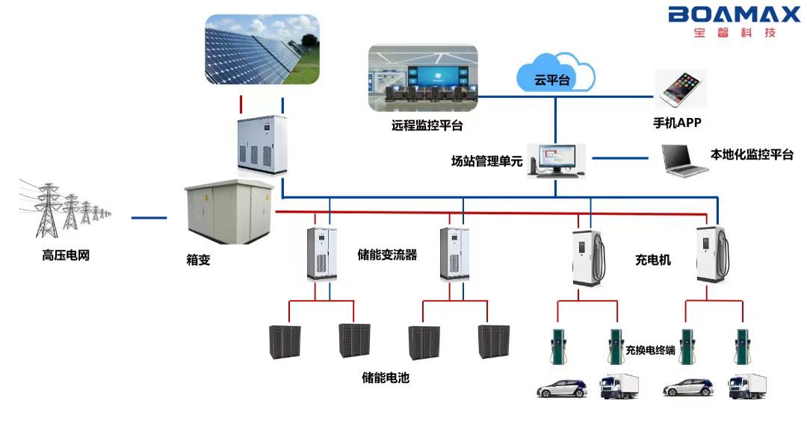
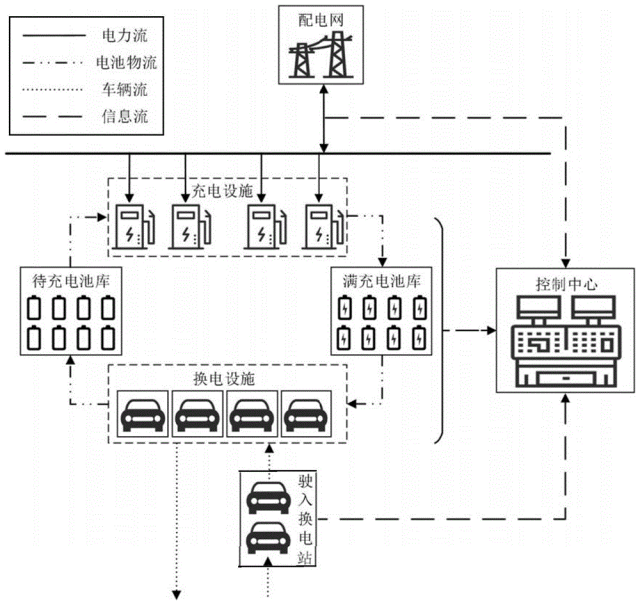
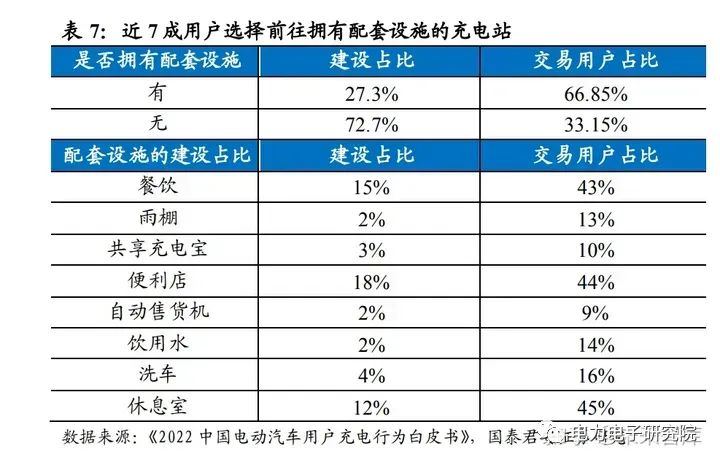
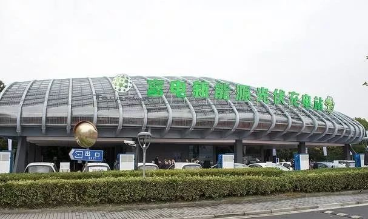
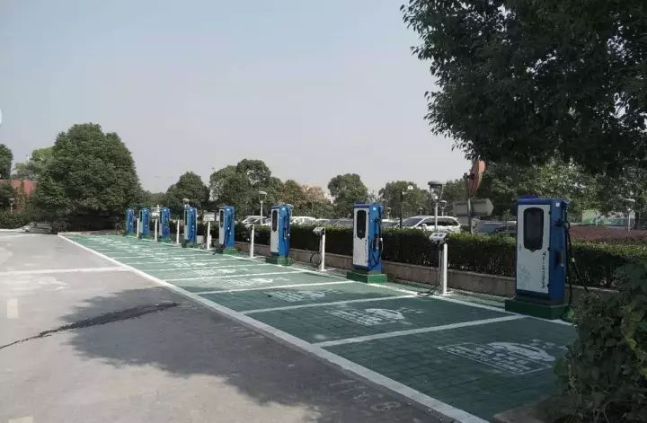
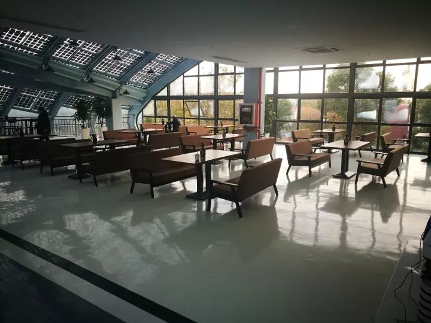
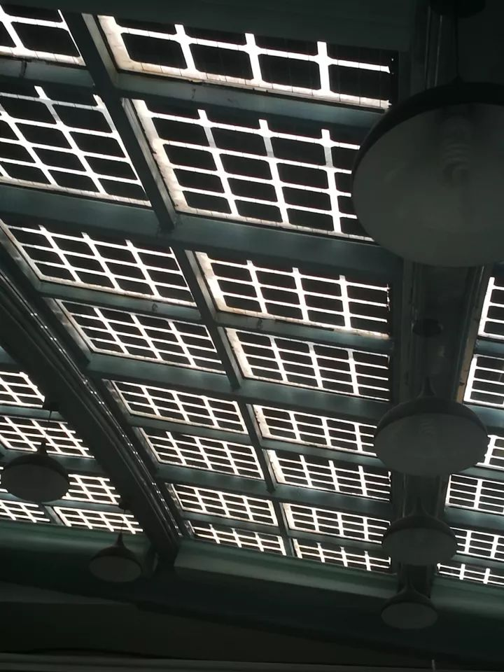
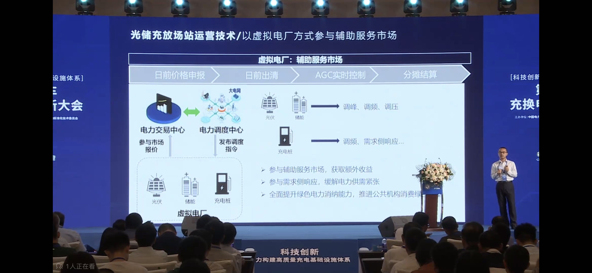

业务模式
一、业务简介
上海地铁可以通过与第三方运营商合作，在合适的地铁站点附近建造光储充换一体化充电站，以实现节约电费、增加收益、节能环保的目标。
主要收入渠道有电力自发自用、与站点周边商业拓展合作及参与电力辅助市场服务。

图1：光储充换一体化示意图
参考链接_“光储充换”智慧交通一体化
什么是“光储充换/检”？
- 光：利用光伏电池板发电。例如392平方米的棚顶光伏板，年发电量约10万度，平均每天8小时的发电时长。
- 储：包含储能电池和变压器两部分设备，主要有以下两点作用：
- 将光伏发的电储存进储能电池。
- 在晚上谷电的时候把电充进储能电池，再在白天峰电的时候放出。
- 充：指用充电桩给新能源车快速充电。充电主要来源于光伏发电和储能电池里的蓄电，若均用完，还可以取电网的电。
- 换：指通过电池组更换的形式为新能源车续航。此方式在补能时间、电池使用率、采购成本等方面具有显著优势。可以避免传统充电方式充电时间长、受环境温度影响较大，因为大功率快速充电会加速电池组的老化等问题，增强电池的安全性。

图2：换电模式
做电池组更换业务主要具有以下价值：- 解决纯电动汽车在普及过程中的难点问题，为用户的绿色智慧出行带来全新的选择，带来社会价值。
- 间接提升新能源车的使用数量，从而促进光储充换站点的经济收益。
- 可催生车电分离商业模式，促进上下游生态产业发展，共同提取动力电池的全寿命周期的价值。
- 检：指对车辆的电池进行检测，主要有以下2种：
-
仅通过读取电池的充电数据，在充电过程中为车辆进行检测。时代星云的检测涵盖23个项目，最终通过算法，提供一个总体的评分，即电池健康度，并形成一份电池检测报告。在充电结束后，会将这份电池检测报告发送给客户。报告内容除了总评评分外，还包含了检测项目参数及参数异常解读。
-
通过一次充电和一次放电的循环，为电池做更加深入的检测。这也突出了储能的必要性，因为需要将放出来的电储存在储能电池中。这个方法并不支持所有车辆，仅支持具备直流口可对外放电的车辆。
做检测业务主要具有以下价值：- 解决用户的安全焦虑，带来社会价值。目前还未普及车辆的电池检测，大多数用户并不知道电池的损耗情况。
- 解决目前的车辆残值评估问题，可于二手车市场合作增加收益。新能源车的残值主要由电池决定，若可以检测出电池的损耗情况，车辆残值则相对容易计算。
参考链接_“光储充检”一体化
参考链接_新能源车换电模式
为什么要做“光储充换/检”？
- 充电为朝阳行业：充电桩需求主要由新能源车数量决定，根据公安部的数据，2018年至2022年期间，我国新能源汽车保有量显著增加。预计到2025年，我国新能源汽车将达到3200万辆。
- 充电技术成本降低：IGBT技术占充电桩成本的约20%，目前该技术国产化进入高速增长期，国产化率已达到30%-35%，可大幅降低充电桩的成本。
- 上海地铁电费高昂：上海地铁目前承担20亿每年的电力成本，利用光伏+储能可以实现电力自发自用，达到节约电费的目的。
- 储能具备盈利可能：我国电力现货和辅助服务市场机制的逐步健全，在峰谷电价差逐渐拉大的情况下，储能可以通过峰谷电价差套利参与电力现货市场获利，此外，还可以通过参与辅助电力市场服务获利。
- 节能环保：使用清洁能源可以助力中国实现“双碳”目标。
- 可带动集团产业生态发展：建造“光储充换/检”一体化充电站，可以与集团ESG相关业务、绿色出行、商场零售等业务相结合，实现共同增值。
- （待确认）光伏设备成本降低。
参考链接_新能源汽车预估数量
参考链接_新能源汽车保有量持续增长
参考链接_IGBT国产化
参考链接_充电桩成本中IGBT占比
参考链接_电力辅助服务将成储能主要盈利渠道
上海地铁有什么优势？
- 可利用出行数据选址
- 可用场地多
- 业务类型丰富，可通过跨界合作拓宽收入渠道
二、收益模式
-
利用分布式光伏发电+储能削峰填谷实现能源自发自用，节约电费。
- 通过为客户提供充电服务收取停车费和充电服务费。
-
打造配套齐全的充电桩站点及停车场（若有），除收取充电服务费、停车费外，拓展商业商机（如商品经营、商场引流、广告收入），增加收入。
根据国泰君安证券，有配套设施的充电站使用占比明显高于没有配套设施的充电站，比例约为2：1，而建设占比则恰恰相反，仅有27.3%的充电场站配备了卫生间、餐饮、休息室、便利店等配套设施，表明客户对配套设施存在潜在需求。其中配有餐饮、便利店、休息室的充电场站最受欢迎，使用率分别为 43%、44%、 45%。

图3：用户对于充电桩设施配套的偏好
相关案例：
Tellus poweR 富电新能源光伏充电站，位于上海欢乐谷附近，与佘山森林公园为邻。在这里，普通新能源电车仅需花20分钟即可给车完成电量供给，日均可满足超过400辆电车充电。等待充电时，客户还可以在充电站的休息大厅小憩。站点配备咖啡馆、电影院、真人VR体验店和迷你KTV，可以满足客户的多样化需求。难能可贵的是，所有充电站的用电都是自给自足，全靠顶棚的千余片铝框光伏板来完成充电。

图4：富电新能源光伏充电站外观

图5：富电新能源光伏充电站充电桩
图6：富电新能源光伏充电站咖啡馆
图7：富电新能源光伏充电站充电桩

图8：富电新能源光伏充电站休息大厅

图9：富电新能源光伏充电站屋顶光伏电池板
-
通过虚拟电厂参与电力辅助市场服务收取服务费，提升充电桩站点利用率，拓宽收入来源。
2015年以前，我国辅助服务总费用占总电费的比例不到1.5%，近两年，随着电力辅助服务市场的不断发展，这一比例已升至2.5%，随着新能源的快速发展，电力辅助服务费用的占比还会继续上升。
按照2025年、2030年全社会用电量预计达到9.5万亿千瓦时、11万亿千瓦时测算，假设全国平均销售电价0.6元/千瓦，辅助服务费占全社会用电费用的3%，2025年、2030年辅助服务市场规模将分别达到1710亿元、1980亿元。
远景集团高级副总裁田庆军表示：“电力辅助服务品种众多，我国主要是调峰、调频两种，国外的调频则更为精细。国外成熟的电力市场中，储能60%-70%的收益来自于辅助服务费用。而我国目前超半数的储能投资收益来自峰谷价差。未来，我国储能通过参与电力辅助服务盈利的比重将越来越高。”

图10：参与辅助电力市场服务模式图
收益要点
- 提高充电桩利用率：充电业务市场规模 = 充电总量*（电费+服务费用），其中电费和服务费通常实行政府指导价管理，相对固定。因此充电桩的利用率是判断运营商盈利的关键指标。
利用率 = 时间利用率*功率利用率；时间利用率 = 有效充电市场/总时长；功率利用率 = 充电桩实际输出功率/充电桩最大输出功率。目前国内充电桩利用率约3%-5%（中汽协数据），要达到典型的60kW直流桩和7kW交流桩的盈亏平衡点时的充电利用率，分别需要8.29%和8.12%（光大证券数据）。
- 正确选址：目前充电桩市场因为充电桩选址未匹配需求，造成盈利困难。从充电桩的建设占比与使用占比来看，公共机构（由政府设置的公共停车场）、大型建筑配套停车场、居民区的充电桩数量较多，且车位相对充足。但部分场所如工业园区、交通枢纽（公共交通站点附近的停车场）、大型文体设施、写字楼、路边停车位的充电桩的使用占比均大于其建设占比，充电桩建设分布有完善空间。
相关案例：
上海顺荣捷福建合伙人陈总的充电站位于一个拥有大流量的城市商业综合广场，集吃喝玩乐于一体，地理位置优越。每天人流车流非常密集，首批上线的10台充电桩，20个快充车位供不应求，这是场站能够快速盈利的基础，同时顺荣捷为充电桩进一步提供了场站服务体系（如充电完成提醒），大大加快场站利润空间，最终在场站上线运营仅仅半年，合伙人陈总就收回成本，开始盈利挣钱。
充电桩投建前进行相关数据分析测算的内容包括：场站车流量、周边充电场站分析、项目的停车数量、新能源车临停比例、停放时长、车位周转率。
参考链接_充电桩利用率及充电桩用户需求特点
参考链接_富电新能源光伏充电站
参考链接_辅助电力市场
参考链接_电力辅助服务将成储能主要盈利渠道
参考链接_充电业务盈利困难问题
参考链接_充电桩选址投建案例
三、关键资源
- 场地（空地/屋顶资源）
- 前期投入资本（箱式电力设备和充电网的领军企业特锐德董事长于德翔指出，需至少5亿的前期投入）
参考链接_前期投入资本
四、关键活动
五、合作伙伴
- 第三方充电解决方案提供商，如特来电和星星充电。
- 第三方储能解决方案提供商，如时代星云、美的楼宇科技。
- 第三方清洁能源综合解决方案提供商，如芯能科技